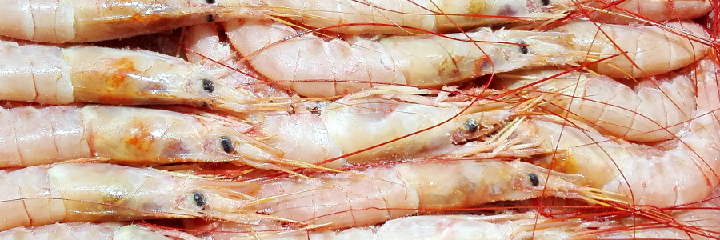
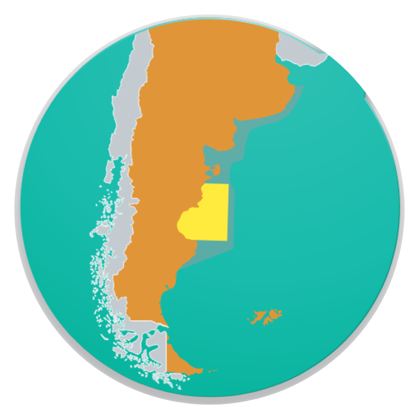

FICHA TÉCNICATECHNICAL DATA SHEET
Langostino — Argentine Red Shrimp
Pleoticus muelleri (Spence Bate, 1888)
Identificación / Identification
Nombre comercialCommercial nameLangostinoArgentine Red Shrimp
Nombre científicoScientific namePleoticus muelleri
FamiliaFamilySolenoceridae
ÓrdenOrderDecapoda
Código HSHS Code0306.17
Zona de pesca / Fishing area
OcéanoOceanAtlántico SudoccidentalSouthwest Atlantic
Zona FAOFAO Area41
PaísCountryArgentina — Mar ArgentinoArgentina — Argentine Sea
DistribuciónDistributionCosta patagónica (AR) – Río de Janeiro (BR) · 18°S–50°SPatagonian coast (AR) – Rio de Janeiro (BR) · 18°S–50°S
ProfundidadDepth3–110 m
Arte de pescaFishing gearRed de arrastre de fondo (tangones)Bottom trawl (outriggers)
TemporadaFishing seasonMay–Oct: aguas nacionales · entero congelado a bordo; colas/derivados congelados en tierra. Nov–Mar: aguas provinciales · todo congelado en tierra.May–Oct: national waters · whole frozen on board; tails/value-added frozen on shore. Nov–Mar: provincial waters · all frozen on shore.

Biología / Biology
Talla máx.Max size18 cm (macho) · 22,5 cm (hembra)18 cm (male) · 22.5 cm (female)
Peso máx.Max weight50 g (macho) · 100 g (hembra)50 g (male) · 100 g (female)
Ciclo de vidaLife cycleCorto (aprox. 2 temporadas de pesca)Short (about 2 fishing seasons)
ColorColorRosado a rojizo (variable, según sexo)Pinkish to reddish (varies by sex)
Especie de aguas templado-frías y hábitos demersal-bentónicos: permanece en el fondo de día y en aguas asociadas a él de noche. Las tallas y el color difieren entre machos y hembras.
Species of temperate-cold waters with demersal-benthic habits: stays on the seabed by day and in associated waters at night. Sizes and color differ between males and females.
Presentaciones / Presentations
| ProductoProduct | CalibreSize | Envase y congeladoPacking & freezing |
|---|---|---|
| EnteroWhole | L1 10/20 · L2 20/30 · L3 30/40 (PPK)L1 10/20 · L2 20/30 · L3 30/40 (per kg) | IQF → spiral freezer · Block 2 × 6 kg en placa de contactoIQF → spiral freezer · 2 × 6 kg block on contact plate |
| ColasTails | C1 30/55 · C2 55/UP · C1L 30/45 · CMIXC1 30/55 · C2 55/UP · C1L 30/45 · CMIX | IQF → spiral freezer · Block 2 × 6 kg e industrial 3 × 6 kg o 3 × 7 kg, congelamiento por placas de contactoIQF → spiral freezer · 2 × 6 kg and industrial 3 × 6 kg or 3 × 7 kg blocks, contact-plate freezing |
| Pelado y desvenadoPeeled & deveined | Calibres por unidadCounts per unit | IQF → spiral freezer · Bolsa 1–10 kgIQF → spiral freezer · bag 1–10 kg |
| Pelado en bolsaPeeled (bag) | Calibres por unidadCounts per unit | IQF / Block · Bolsa 1–10 kgIQF / Block · bag 1–10 kg |
Congelado: entero y colas por IQF (spiral freezer) o block; blocks de 2 × 6 kg y blocks industriales de 3 × 6/7 kg por placas de contacto. Pelado por IQF o block según mercado. Congelado a bordo o en tierra.
Freezing: whole and tails by IQF (spiral freezer) or block; 2 × 6 kg blocks and 3 × 6/7 kg industrial blocks by contact plates. Peeled product by IQF or block according to market. Frozen on board or on shore.
Composición nutricional / Nutritional composition (per 100 g, raw)
19,6–21,4 g
ProteínaProtein
0,4–1,6 g
LípidosFat
0,28 g
Omega-3 (EPA+DHA)
82–100 kcal
EnergíaEnergy
Proteínas, lípidos y energía: INIDEP 2018 (rangos, producto fresco). Omega-3: referencia FishBase/FAO. No sustituyen un análisis de laboratorio del lote.Protein, fat and energy: INIDEP 2018 (ranges, raw product). Omega-3: FishBase/FAO reference. Not a substitute for a batch laboratory analysis.
Conservación y trazabilidad / Storage & traceability
ConservaciónStorageCongelado ≤ −18°CFrozen ≤ −18°C
SistemaSystemIQF / BlockIQF / Block
Vida útilShelf life24 meses24 months
TrazabilidadTraceabilityPor lote / capturaBy batch / catch
frompatagoniaseafoodarg
By Sottomarina SA / Guigus SA
Fuente / Source: INIDEP 2018 · FishBase (Pleoticus muelleri) · FAO